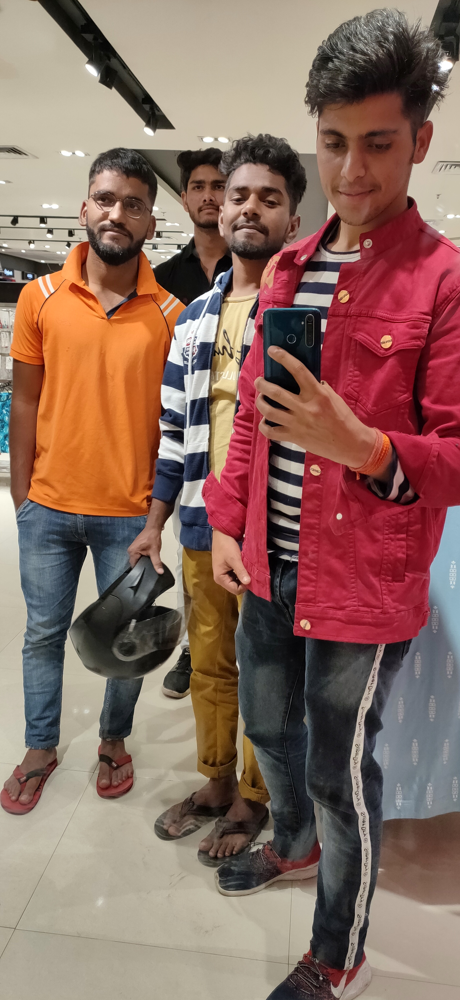

Our Services
ONLINE CLASSES:
An online class is a course conducted over the Internet. They are generally conducted through a
learning management system, in which students can view their course syllabus and academic progress,
as well as communicate with fellow students and their course instructor.
Online classes are generally self-paced, allowing for greater flexibility in completing coursework.
Some examples of online courses are MOOCs, or Massive Open Online Courses, as produced by organizations
such as edX or Coursera. Many traditional universities offer online courses, including Purdue University
via their takeover of Kaplan.
When it comes to student success, community is everything. Introducing our Community, a tool designed to
build connections in and out of class.
BEST FACULTY MEMEBRS



We take proud in the fact that all our lead faculty members are some of the most senior faculty members at some of
the largest schools in Rajasthan. They have consistently produced top-class results with numerous merits in various
state boards over last 5 years.
Furthermore, the multidirectional efforts by members of our faculty team to create an optimal environment where
students strive for excellent performance in board exam along with adequate focus on other forms of studies is
unparalleled in history.
Our faculty team takes inputs from the belief that the role of a teacher is not simply to impart knowledge but to
help the students seek more learning. A perfect blend of intellect, subject knowledge, experience and the art to teach
the most complex subjects in a very clear
and understanding way makes the faculty of Matrix, the best team under one roof. All the members of the faculty team
at MHS are completely oriented for their students' success. Our faculty is committed to provide their best support
inside and outside classrooms.